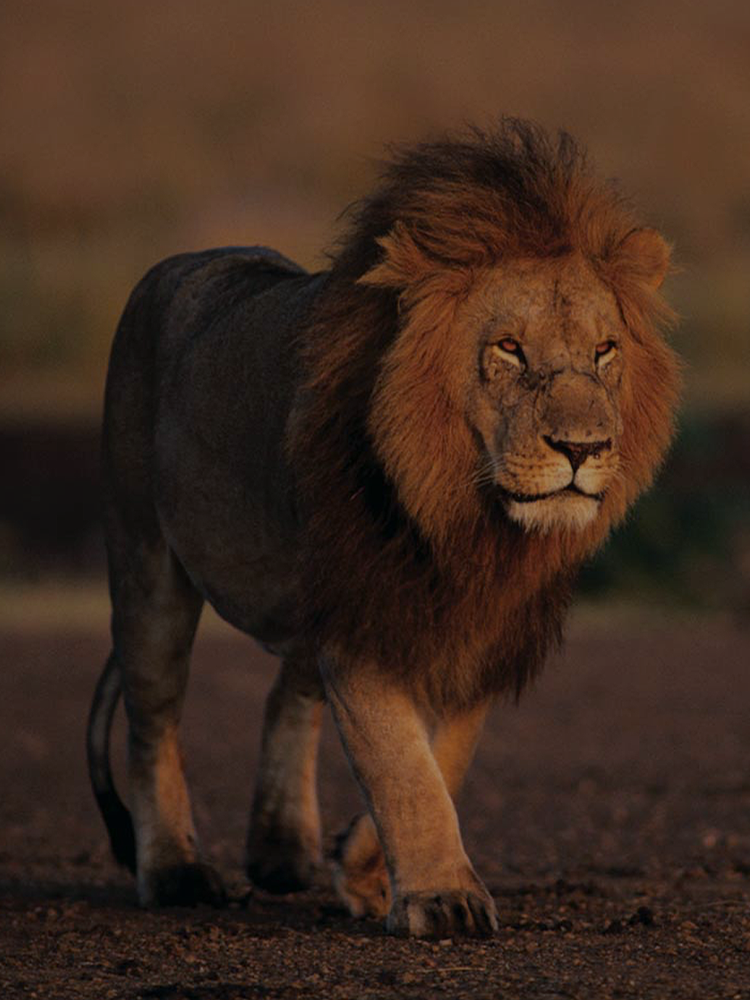

ThePantheraFamily
Home
Home
Meet The Family
Lion
Tiger
Puma
Cheetah
Leopard
Snow Leopard
Jaguar
Gallery
Images & Audio
Video
Click on a family member below to check their fact file!

Your browser does not support the video tag.